Operații cu funcții derivabile
Fie  un interval de numere reale,
un interval de numere reale,  un punct de acumulare și funcțiile
un punct de acumulare și funcțiile  .
.
Teorema FD8: Operații cu funcții derivabile
Dacă funcțiile  și 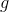 sunt derivabile în
și 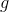 sunt derivabile în  , atunci și funcțiile
, atunci și funcțiile  , ,
, ,  și sunt derivabile în punctul și au loc egalitățile:
și sunt derivabile în punctul și au loc egalitățile:
- ;
- ;
- ;
- .
Dacă și sunt derivabile pe mulțimea (intervalul)  , operațiile cu funcții derivabile devin:
, operațiile cu funcții derivabile devin:
- ;
- ;
- 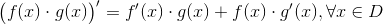;
- .
Aplicații
- Derivăm produsul , unde
 este constantă.
este constantă.
Utilizăm regula 3 a Teoremei FD8 și derivata unei constante; obținem:
.
- Vom deriva funcția ,
 , utilizând regula 4 de la Teorema FD8 și formula derivării unei constante.
, utilizând regula 4 de la Teorema FD8 și formula derivării unei constante.
Avem că:
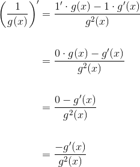
.
Exemple:
Să se determine derivatele funcțiilor 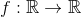 de mai jos și valoarea derivatelor în punctele specificate:
- ,
 ;
; - , 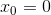;
- , ;
 , ;
, ;- ,
 ;
; - , .
Rezolvare:
- Calculăm
 folosind Teorema FD8 1. și aplicația
folosind Teorema FD8 1. și aplicația  .
.
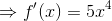.
Atunci este:
.
- Calculăm folosind Teorema FD8 2. și derivatele funcției sinus calculată în capitolele precedente.
.
Calculăm .
- Pentru a calcula , folosim Teorema FD8 3., derivatele funcțiilor elementare calculate în capitolele precedente și aplicația .
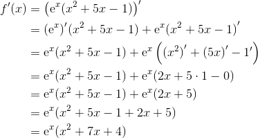
.
Calculăm .
.
- Folosim Teorema FD8 4., formulele derivatelor funcțiilor elementare calculate în capitolele precedente și aplicația , obținem că:
![\begin{align*} {f}'(x)&={\left ( \frac{x^2-2x+3}{x^3} \right )}'\\\\ &=\frac{{(x^2-2x+3)}'\cdot x^3-(x^2-2x+3)\cdot{ (x^3)}'}{(x^3)^2}\\\\ &=\frac{\left [{(x^2)}'-{(2x)}'+{3}' \right ]\cdot x^3-(x^2-2x+3)\cdot 3x^2}{x^6}\\\\ &=\frac{(2x-2\cdot 1+0)x^3-3x^2\cdot x^2+3x^2\cdot 2x-3x^2\cdot 3}{x^6}\\\\ &=\frac{(2x-2)x^3-3x^4+6x^3-9x^2}{x^6}\\\\ &=\frac{2x\cdot x^3-2\cdot x^3-3x^4+6x^3-9x^2}{x^6}\\\\ &=\frac{2x^4+4x^3-3x^4-9x^2}{x^6}\\\\ &=\frac{-x^4+4x^3-9x^2}{x^6}\\\\ &=\frac{x^2(-x^2+4x-9)}{x^6}\\\\ &=\frac{-x^2+4x-9}{x^4}\\\\ \end{align*}](../../media/webbooks/397/2633/images/equations/u3sz_rorrn2l8ffngdv4eq==.gif)
.
Atunci este:
.
- Calculăm folosind aplicația și obținem:
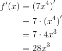
.
Atunci este:
.
- Pentru a calcula folosim aplicația
 și astfel obținem:
și astfel obținem:
.
Calculăm .
.
În concluzie, lăsând la o parte argumentul funcțiilor, operațiile cu funcțiile derivabile sunt:
În continuare, determinăm derivatele funcțiilor tangentă și cotangentă.
Derivata funcției tangentă
Fie .
Atunci avem:
.
În determinarea expresiei derivatei pentru funcția tangentă am folosit:
- scrierea funcției tangentă sub forma ;
- derivata câtului (regula 3. din Teorema FD8 );
- derivatele funcțiilor sinus și cosinus: ;
- formula fundamentală a trigonometriei: .
O altă scriere pentru derivata funcției tangetă este:
 .
.
Exemple:
În exemplele de mai jos folosim formulele  și .
și .
sau
.
sau
.
Derivata funcției cotangentă
Fie . Calculăm derivata acestei funcții astfel:
.
Pentru calculele de mai sus am folosit:
- scrierea funcției cotangentă sub forma 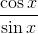;
- derivata câtului (regula 3. din Teorema FD8 );
- derivatele funcțiilor sinus și cosinus: ;
- formula fundamentală a trigonometriei: .
Putem rescrie expresia derivatei pentru funcția cotangentă astfel:
Exemple:
Pentru exemplele de mai jos vom folosim formulele  și .
și .
sau
 .
.
- 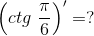
sau
.